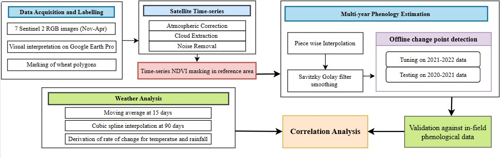

|
Asad Imtiaz Malik "We are very, very small, but we are profoundly capable of very, very big things." I am a dedicated researcher and engineer with a strong commitment to leveraging computational intelligence and machine learning for positive societal impact. Currently a Research Fellow at the Machine Vision and Intelligent Systems lab (MachVis), I collaborate with experts like Dr. Muhammad Moazam Fraz and Dr. Zohair Zafar to pioneer the fusion of Remote Sensing Imagery and Machine Learning, effectively tackling crop health monitoring to combat global food insecurity I completed my undergraduate degree from National University of Science and Technology, Islamabad where I worked as a Research Assistant at TUKL-NUST R&D Lab and later as a Research Fellow at Machine Vision and Intelligent Systems (MachVis) Lab. During my BS degree I worked as a Machine Learning Engineer at Vyro.ai where I innovatively engineered efficient sub-15MB segmentation and inpainting models for clothing and sky in images, prioritizing lightweight design, low-memory inference, and seamless neural network transformation across frameworks such as Tensorflow, Pytorch, ONNX, MLModel (for deployment on IOS based applications). I also engaged in a year-long collaboration with Jaleed Khan, focusing on Visual Question Answering, including scene graph generation and SOTA model fine-tuning on proprietary data. |

|
ResearchI'm interested in computer vision, machine learning, optimization, and image processing. Although, I have really worked with 2D Computer Vision only but now my interests are more shifted towards 3D Computer Vision and fusion of prompt based learning with Vision Tasks. |
|  |
Multi-year monitoring of wheat phenology and effect of climate change in the south Asian region using Sentinel-2 NDVI time series analysis
Asad Imtiaz Malik, Vaneeza Mehmood, Zuhair Zafar, Muhammad Shahzad, Karsten Berns, Muhammad Moazam Fraz SPIE Sensors + Imaging, 2023 (Oral Presentation) Our work proposes a cost-effective methodology that harnesses the power of Earth Observation (EO) data to acquire essential ground data without the need to rely on manual collection. Furthermore, our analysis reveals that a significant temperature surge in 2022, coupled with minimal precipitation, causes an earlier maturation of the crop compared to in 2021. |
Honors and AwardsEmbarking on a journey defined by innovation and dedication, I've had the privilege of participating in numerous hackathons and securing accolades within academic institutions. Join me in exploring a collection of my honors and awards, each representing a testament to my passion for pushing boundaries and achieving excellence |
|
|
Smart Hans: Winner @ Super Artistic Artificial Intelligence (SAAI) Hackathon
Team Members: Asad Imtiaz Malik, Muhammad Qasim Khan, Max Haarich, Akshita Gupta Prize of Interaction, 2021 project page / video / prize Combining head pose estimation and anomaly detection to create a Mind-Reading AI application. |
|
|
Wheat Health Monitoring using Multi-Modal Remote Sensing Imagery
Team Members: Asad Imtiaz Malik 2nd Best Adjudged Intustry Project, OPENHOUSE, 2023 project page / prize Developed a robust application to effectively monitor areas affected by diseases using drone and satellite imagery |
|
Winner @ Peach Data Visualization Challenge
Asad Imtiaz Malik, Muhammad Qasim Khan Infinity21 Winner, 2021 Emerging victorious nationwide, we clinched the top position in a Data Visualization Hackathon. |
{kind=link}